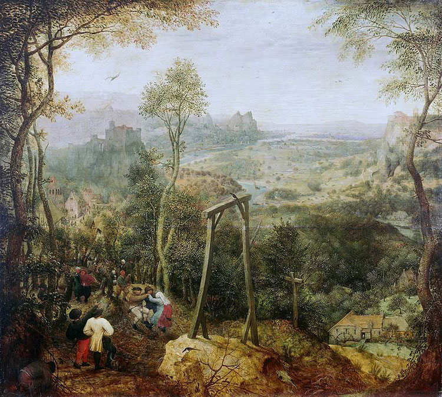

Невозможные фигуры
Что такое невозможные фигуры?
Невозможная фигура — один из видов оптических иллюзий, фигура, кажущаяся на первый взгляд проекцией обычного трёхмерного объекта, при внимательном рассмотрении которой становятся видны противоречивые соединения элементов фигуры. Создаётся иллюзия невозможности существования такой фигуры в трёхмерном пространстве.
В искусстве
В старинной живописи можно встретить такое частое явление как искаженная перспектива. Именно она создавала иллюзию невозможности существования объекта. На картине Питера Брейгеля Старшего «Сорока на виселице» такой фигурой является сама виселица. Но в то время создание подобных «небылиц» — это был не полет фантазии, а скорее все же неумение строить правильно перспективу.
В реальной жизни
Многие скажут, что невозможные фигуры действительно нереальны и не могут быть воссозданы. Другие же будут утверждать, что чертеж, изображенный на листе бумаги, является проекцией трехмерной фигуры на плоскость. Следовательно, любая фигура, нарисованная на листе бумаги, должна существовать в трехмерном пространстве. Так кто же прав? Вторые будут ближе к правильному ответу. Действительно, увидеть «такие» фигуры в реальности можно, необходимо лишь смотреть на них с определенной точки. С помощью картинки, на которой изображён Джерри Андрус и его невозможный куб можно убедиться в этом.